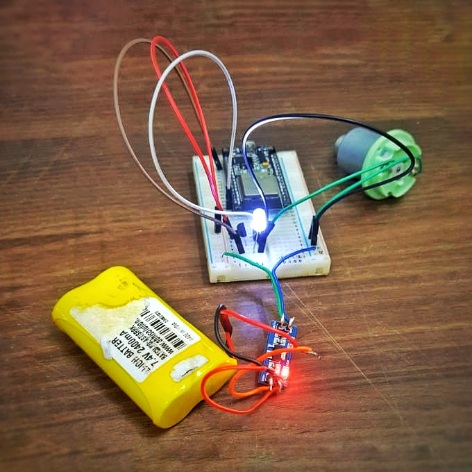

IoT based Assistive Alert Device
We started developing a device on April 10th 2021, which is to be used in the library of NISH(National Institute of Speach and Hearing), Kerala, India. The hardware setup will be installed on the surface of reading table and will be connected to the local network. The librarian whose mobile phone is connected to the same network can control the device using the mobile application. With the press of a button on the app, the device will vibrate for 1 minute. The disabled people can sense this vibration and they can be alerted.
Features
- A portable device
- Alert the student using vibration,sound and light
- Rechargeable battery to power continously
- Compact and ergonomic design to handle easily
- Device should be controlled using a Mobile App
Component Used
- ESP 8266/32
- Regulator IC - 5.1V ,3.3V
- Diode - 1N4007, 2N2222
- Motor
- LED
- Buzzer